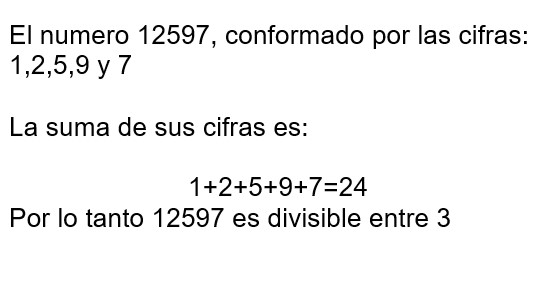
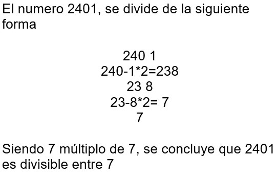
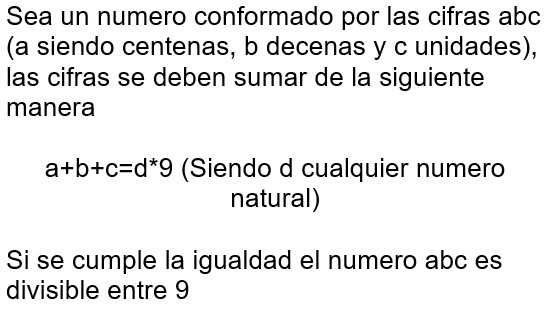

Criterios de divisibilidad
Divisibilidad entre 2
Todo número par es divisible entre 2, siendo los números pares aquellos que acaban en 0,2,4,6,8.
Divisibilidad entre 3
Todo número es divisible entre 3, sí la suma de sus cifras es un múltiplo de 3.


Fuente: autor.
Divisibilidad entre 4
Todo número es divisible entre cuatro si sus dos ultimas cifras son múltiplo de 4.


Fuente: autor.
Divisibilidad entre 5
Todo número es divisible entre cinco si este acaba en 0 o en 5.
Divisibilidad entre 6
Todo número es divisible entre seis si este es previamente divisible entre 2 y 3.


Fuente: autor.
Divisibilidad entre 9
Todo número es divisible entre nueve si la suma de sus cifras es múltiplo de 9.


Fuente: autor.
Divisibilidad entre 10
Todo número es divisible entre diez si su última cifra es 0.
Referencias
Criterios de divisibilidad. Recuperado el 25 de febrero de 2020, de: http://www.bartolomecossio.com/MATEMATICAS/criterios_de_divisibilidad.htmlSmartick. Criterios de divisibilidad del 3 , del 11, del 9 y del 4. Recuperado el 25 de febrero de 2020, de: https://www.smartick.es/blog/matematicas/recursos-didacticos/criterios-divisibilidad-del-3-11-9-4/
Smartick. Divisibilidad del 4: ¿Cómo saber si un número es divisible por 4?. Recuperado el 25 de febrero de 2020, de: https://www.smartick.es/blog/matematicas/divisibilidad/divisibilidad-del-4-como-saber-si-un-numero-es-divisible-por-4/
Smartick. Criterios de divisibilidad del 6 con ejemplos. Recuperado el 25 de febrero de 2020, de: https://www.smartick.es/blog/matematicas/divisibilidad/divisibilidad-del-6/
Smartick. Divisibilidad del 7. Recuperado Recuperado el 25 de febrero de 2020, de: https://www.smartick.es/blog/matematicas/divisiones/divisibilidad-del-7/
Smartick. Criterios de divisibilidad del 6, del 8 y del 12. Recuperado el 25 de febrero de 2020, de https://www.smartick.es/blog/matematicas/recursos-didacticos/criterios-de-divisibilidad-6-8-12/